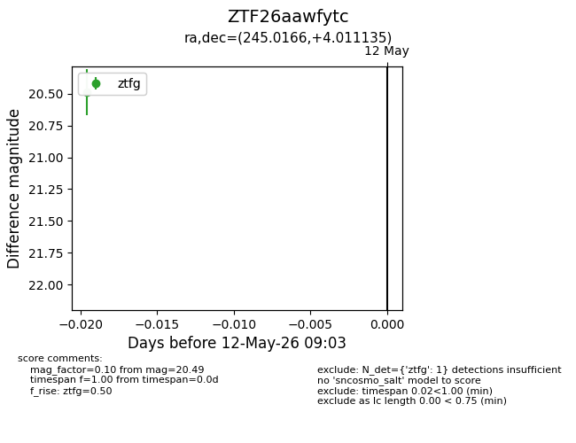
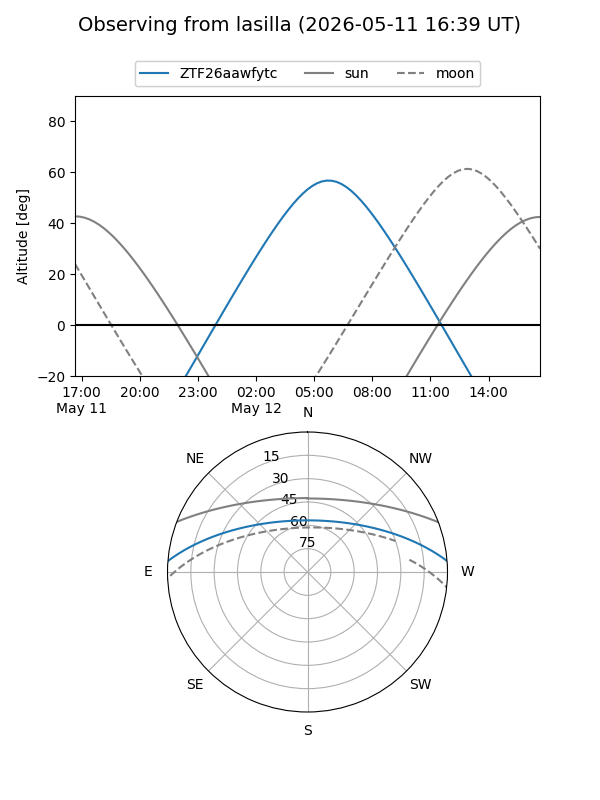
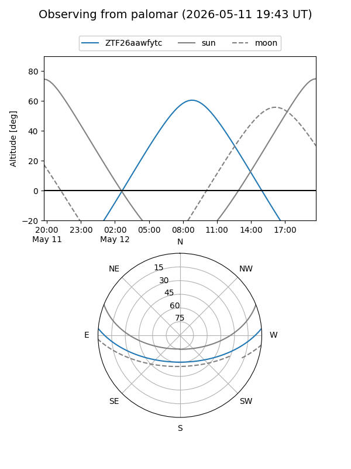

ZTF26aawfytc
Target ZTF26aawfytc at 2026-05-12 09:06
Aliases and brokers:
FINK: link
Lasair: link
ALeRCE: link
alt names
ZTF26aawfytc (ztf,fink_ztf)
Coordinates:
equatorial (ra, dec) = 245.0166,+4.01113
equatorial (HMS+DMS) = 16:20:03.99,+04:00:40.09
galactic (l, b) = (17.5441,+35.20929)
Flags:
Photometry:
last ztfg=20.49
1 ztfg detections
Lightcurve

Visibility


Additional plots